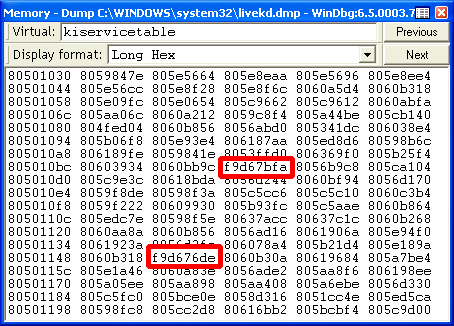

CS 3710
Introduction to Cybersecurity
Aaron Bloomfield (aaron@virginia.edu)
@github | ↑ | 
Rootkits
Rootkits
Rootkits and the Sony Fiasco
- A 2005 attempt by Sony/BMG Music to implement a copy protection scheme on audio CDs has generated interest in rootkits
- We will study rootkits in general and then use the Sony debacle as a case study
- Wikipedia article
Rootkits
- A rootkit is an exploit that permits an attacker to execute commands with root privileges
- i.e. as root on Linux or as Administrator on Windows
- It does this while hiding the activity to avoid detection by system administrators
- To hide from a system administrator on a Unix system, the attacker would want to suppress displays of attacker processes, attacker files, attacker logins, etc.
Rootkits
- To do this, several utilities (e.g. ps, ls, users) would need to be replaced with versions that will hide files, logins, and processes
- Hence, this is a kit (collection) of Trojan Horse utility programs
- Not a virus; almost all rootkits do not try to replicate; their purpose is to control a single system
Rootkit Varieties
- Because a rootkit can hide files and processes, there is great variety to rootkit attacks:
- Hiding backdoors, keyloggers, spam, or DOS programs
- Allowing zombie use of the computer
- Hiding a program that copies chat sessions out, relaying private info back to the attacker
- All of these, and more, have occurred with rootkit attacks, e.g. the FU rootkit
Kernel Level Rootkits
- A kernel level rootkit adds to, or modifies, the OS kernel code to patch or hook system calls, so that the Trojan Horse version hides info about the attacker
- Often done in Linux with a Loadable Kernel Module
- Windows equivalent is usually a loadable device driver
Application Level Rootkits
- Application level rootkits patch or replace a significant application with a Trojan Horse version
- Easier than kernel level to do; also easier to detect
Detecting Rootkits
- Major problem: The OS is not trustworthy during the scanning process, if there is a kernel mode rootkit present
- Most reliable solution: Shut down system, scan the hard drive from an external connection, with no OS running
- How often do users want to do this???
- Need scanners similar to antivirus scanners
Stealth Detection
- To bypass a (potentially) compromised OS, an AV software will directly call the BIOS to access the disk
- If the results differ, then the stealth detector raises the alarm and tries to find the malware
Stealth Detection continued
- An existing stealth detector in an AV scanner can be modified to find a stealthy rootkit
- The stealth detector lists directory contents, file sizes, etc., in system directories, using two means:
- Normal OS calls
- Direct BIOS calls
- If the two results differ, it is likely that a rootkit is on the system, hiding some files
Rootkit Countermeasures
- Simple rootkit counter-measure: when they detect a scanner’s presence, they stop hiding things
- Scanner process names are well known and can be detected
- If they stop hiding files, then the stealth detector does not sense anything wrong
- When the stealth detector process ends, the rootkit starts hiding files again
Rootkit Countermeasures
- Defeating the countermeasures:
- An integrity database keeps a list of system directory files gathered at system installation
- Then check BIOS and OS listings of the system directories against the DB to find new files
- Just before running, the stealth detector executable is renamed to a random name (e.g. gT54xZc7.exe) to evade detection by the rootkit
- The rootkit will continue to operate, and the listings from the OS and BIOS will differ
- An integrity database keeps a list of system directory files gathered at system installation
Removing a Rootkit
- The rootkit has replaced, patched, or hooked kernel code, interrupts, device drivers, and/or system services and their registry entries
- System is unreliable, yet system operations are needed to remove files, etc.
- Extremely difficult to remove a rootkit without damaging the system
- Hooked or patched service might be totally absent after removal
- Standard approach: Save valuable data files, then reformat the disk and reinstall the OS. Ouch!
Removing a Rootkit continued
- There are rootkit detectors that have their own file system drivers for NTFS, FAT32, FAT16, etc., and can perform disinfection without using the usual system calls
- e.g. RkDetector
- Integrity database identifies files to remove, and infected files that need to be restored to prevent re-infection
Sony Fiasco: description
The Sony CD Fiasco of 2005
- In late October 2005, Mark Russinovich (operator of the SysInternals blog) tested the latest version of RootkitRevealer (RKR)
- Russinovich practiced very safe computing, and even wrote an article on detecting rootkits for the June, 2005, edition of Windows IT Pro
- Much to his surprise, RKR revealed a large number of hidden system files on his PC, an obvious symptom of a rootkit infection
- His blog entry
What RKR revealed
(from Mark Russinovich’s blog entry)
Note that these files were hidden (last column) and many started with $sys$
Sony CD Fiasco continued
- To confirm that he had detected a rootkit, Russinovich analyzed the system with his own tool, LiveKd (Live Kernel Debugger)
- LiveKd detected that the system services table (a table of function pointers) had function pointers patched into it that were obviously not in the address range of the kernel
- See 2nd screen shot in his blog entry (next slide)
- Disassembling one of these functions showed it was from the aries.sys device driver, which was one of the hidden files detected by RKR
What RKR revealed
(from Mark Russinovich’s blog entry)

The circled function pointers are clearly different than the others
Sony CD Fiasco continued
- While the directory was hidden, once he knew of its existence from RKR, he could open a command prompt window and change directory (CD command) directly into it
- Sure enough, there were the rootkit device drivers and other files:
Sony CD Fiasco continued
- Using IDA Pro to disassemble the entire driver, Russinovich discovered that it hooked enough system services to hide “every file, directory, Registry key or process whose name begins with
$sys$ - To confirm, he made a copy of notepad.exe called
$sys$notepad.exe, and it disappeared from view!
Sony CD Fiasco continued
- Russinovich also detected unsafe race conditions in the rootkit device driver
- After renaming the driver, he rebooted and the rootkit was no longer active
- All files were visible
- A string dumping tool revealed that the files were part of a product called “Essential System Tools” from a company called “First 4 Internet”
Sony Fiasco: The Plot Thickens
- The First 4 Internet web site had nothing about “Essential System Tools” or aries.sys, but revealed that the company developed Digital Rights Management (DRM) software, including a copy protection application called XCP
- Google revealed that the company had DRM contracts with several major audio CD companies, including Sony/BMG Music
Sony Fiasco: The Plot Thickens
- Russinovich recalled having just recently bought and played a Sony/BMG CD (ironically, entitled Get Right with the Man) that required you to install its media player in order to play it on a PC


Sony Fiasco: The Plot Thickens
- When he played the CD again, there was an increase in CPU usage by process
$sys$DRMServer.exe - The Services tab of Process Explorer identified the app as “Plug and Play Device Manager,” which is an obvious attempt to mislead the user into thinking that this is a core Windows service, which it is not:
Sony Fiasco: The Plot Thickens
- Russinovich found no means to uninstall the rootkit
- And no mention in the EULA (End User License Agreement) that software that could not be uninstalled was going to be installed on his system
- So he removed the files and their associated registry keys manually and rebooted
Sony Rootkit: Can’t Uninstall
- Manual installation led to a major problem, as is often the case with rootkits:
- The CD drive had now disappeared from the system’s view
- Windows permits a form of device driver chaining called device filtering, and XCP had installed a device filter called Crater.sys (another ironic name) that had cratered his system by tunneling into the device driver chain for the CD drive
Sony Rootkit: Can’t Uninstall
- When he tried to delete the registry entries that accomplish the chaining, he got an “access denied” error
- Luckily, he was expert enough to work around that and delete the chained drivers for both the CD drive and the IDE channel for the CD drive (Cor.sys)
Sony Rootkit Problems
- User is not told the software will be installed and cannot be uninstalled
- A user who is notified by a rootkit detector that there are hidden files, and who then deletes those files, will lose the use of the CD drive and probably not know what to do about it
Sony Rootkit Problems
- A legal problem: Philips owns the trademark to the “CD” symbol, and forbids its use on any non-pure audio CD
- Any intruder now could install files that begin with
$sys$and piggyback onto the XCP rootkit, getting his files hidden for free!
The Fiasco Hits the Fan
- The October 31, 2005 blog entry led to major media coverage
- Sony at first said that the EULA warned about the software, and that the EULA told how to uninstall it
- Later admitted this was not true, started providing uninstall instructions
- Business Week article revealed Sony was warned on October 4 (!) by F-Secure, an AV vendor
The Fiasco Hits the Fan
Classic quote:
Most people don’t even know what a rootkit is, so why should they care about it?
by Thomas Hesse, President, Global Digital Business, Sony/BMG
The Sony Patch
- Sony got First 4 Internet to provide a patch to update the rootkit
- The 3.5MB “patch” included a whole new version of the DRM software
- Immediately after installing it, Russinovich noticed a new entry called MediaJam in the Add/Remove Programs list:
(from his second blog entry)
The Sony Patch continued
- MediaJam was a heretofore unused name
- Clicking on it to uninstall it produced an error! Another uninstallable package!
- The patch just provides the ability to unload the device driver, restoring the system to its normal state
- However, unloading the driver when it is about to execute could crash the system, due to a race condition in the driver’s design
Sony Fiasco: aftermath
Privacy Issues
- Sony denied that the software caused any security or privacy violations
- However, network activity sniffers detected the software connecting to Sony servers and trans-mitting the unique serial ID number of the CD
- Analysis shows that the communication with sonymusic.com just checks for updates to album art, song titles, etc.
- Still, this was denied by Sony until it was proven, is not mentioned in the EULA, and is not configurable
Security Exploits
- As predicted, the hiding of all files beginning with
$sys$was a vulnerability waiting to be exploited, and it has now been exploited by at least three viruses- Security firm Sophos reported that spam emails, subject “Photo Approval Deadline,” were using the
$sys$prefix to install the Stinx-E Trojan Horse (backdoor software)
- Security firm Sophos reported that spam emails, subject “Photo Approval Deadline,” were using the
Security Exploits continued
- The World of Warcraft online multiplayer game has an anti-cheating system that scans running processes for cheats
- Cheat processes are now being created with the
$sys$prefix, escaping detection for any cheater who first buys a Sony CD and plays it on their PC - Article from The Register
- Cheat processes are now being created with the
Security Exploits continued
- Anti-virus software vendors were reluctant to target the DRM software at first, perhaps because Sony might sue them
- After the exploits were reported, they all began to update their scanners to disable or remove the Sony/BMG rootkit
- CNET article
Sony CD: Not on PCs
- What if you play the Sony/BMG CD on a stereo, car stereo, portable player, etc., and not on a PC?
- The trick to the implementation is that Sony made the first CD track (outer edge) a data track containing a loader to load the DRM software from the innermost tracks
Sony CD: Not on PCs continued
- If you load a copied CD onto your PC, it will not have the Sony media player installed (with the encrypted IDs for your system) and will examine the outer track to see what kind of CD it is
- The CD will look like a data CD and will endlessly spin around reading the data track
- In your car stereo, the data track will just be ignored and the player will skip to the audio track … or will it?
Sony CD: Not on PCs continued
- Some car and portable players have the ability to play various mixed format CDs, with song title data etc. mixed with audio
- There have been reports of failures to play the CDs by some portable and car CD players
Bypassing the Protection
- Users who understand the implementation have already reported that they can disable the entire DRM scheme by using a Sharpie marker to cover the outer track
- According to the DMCA, any technology used to bypass copy protection is illegal!
- A little Scotch tape that just covers some of the outer track also makes the PC treat it as a pure audio CD
Sony Fiasco: The Aftermath
- Sony sued: in California (class action suit), by Texas attorney general, another class action suit expected in New York
- Sony DRM Forces Recall of CD’s
- Security Expert Bruce Schneier summarizes the case and the disturbing implications
- Settlement ends Sony rootkit case
Sony Fiasco: Final Ironies
- Hackers disassembled and reverse engineered the rootkit code
- It was GPL software and is therefore being used in violation of copyright law
- The author of the stolen code?
- “DVD Jon” Johansen, the Norwegian infamous for writing the “DeCSS” code that cracked the copy protection software once used on DVDs
- Slashdot article
- He was prosecuted but acquitted in the DeCSS case
- Fun aside: Gallery of CSS Descramblers